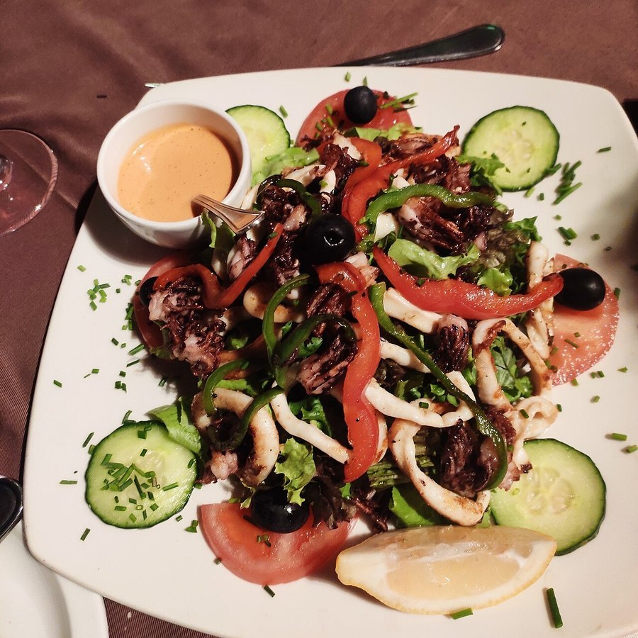

Olive Oil Health Benefits: What the Research Shows
It's the fat at the center of the most-studied eating pattern in nutrition science. Here's what extra-virgin olive oil actually does for your heart, metabolism and more.

Key takeaways
- Olive oil is rich in monounsaturated fat and polyphenols, a combination linked to lower cardiovascular risk in large studies.
- Extra-virgin varieties carry far more of the beneficial compounds than refined or "light" olive oils.
- It's the defining fat of the Mediterranean diet, one of the best-studied eating patterns for heart and brain health.
- It isn't a stand-alone fix — benefits show up when it replaces less healthy fats, not when it's added on top of an already poor diet.
- Storage matters. Heat, light and age degrade its protective compounds faster than most people expect.
Olive oil, especially extra-virgin, is rich in monounsaturated fat and polyphenol antioxidants linked to lower risk of heart disease, better blood sugar control, and healthier cognitive aging. Most of this evidence comes from long-term Mediterranean diet studies, where olive oil replaces less healthy fats rather than adding on top of them.
Olive oil has one of the longer, more consistent track records in nutrition research, largely because it's the backbone of the Mediterranean diet, a pattern that's been followed in population studies for decades. That doesn't mean every claim about it holds up equally well. Some benefits are backed by large randomized trials; others rest mostly on observational data. Here's where the evidence is strongest, and where it's still developing.
What makes olive oil different from other cooking oils?
Olive oil is mostly made up of oleic acid, a monounsaturated fat that behaves differently in the body than the saturated fat in butter or the polyunsaturated fat that dominates many seed oils. Extra-virgin olive oil also retains polyphenols, a group of plant compounds with antioxidant and anti-inflammatory activity, because it's pressed from olives without the heat or chemical processing that strips them out of refined oils. That combination of fat type plus polyphenol content is what most of the research is actually studying.
How does olive oil benefit heart health?
This is the best-established benefit. Olive oil is associated with improved cholesterol profiles, particularly a modest rise in HDL ("good") cholesterol and a reduction in oxidized LDL, a form of LDL cholesterol thought to be more directly harmful to blood vessels. The PREDIMED trial, a large randomized study of the Mediterranean diet, found that a diet supplemented with extra-virgin olive oil reduced major cardiovascular events compared with a lower-fat control diet. For more on reading your own numbers, see our guide to LDL vs HDL cholesterol.
Can olive oil help manage blood sugar?
The evidence leans that way. Monounsaturated fat, in place of saturated fat or refined carbohydrates, is associated with better insulin sensitivity and steadier blood sugar after meals in multiple studies. Olive oil also appears to slow how quickly a meal's carbohydrates raise blood sugar when eaten together, a modest but real effect. It isn't a treatment for diabetes, but swapping it in for less favorable fats is a reasonable, evidence-backed choice for people managing blood sugar.
Does olive oil support brain health?
Observational studies following the Mediterranean diet, with olive oil as its signature fat, have repeatedly linked the pattern to slower age-related cognitive decline and lower dementia risk compared with typical Western diets. Some smaller trials suggest olive oil's polyphenols may have antioxidant effects relevant to the brain specifically, but this research is less mature than the cardiovascular data. It's reasonable to treat it as one supportive piece of an overall brain-healthy diet rather than a targeted cognitive intervention on its own.
What are olive oil's anti-inflammatory effects?
Oleocanthal, one of olive oil's polyphenols, has measurable anti-inflammatory activity in lab studies, with a mechanism that resembles, at a much lower potency, how ibuprofen works. This doesn't make olive oil a substitute for medication, but chronic low-grade inflammation is tied to a long list of age-related conditions, and a diet pattern that includes regular olive oil intake is one of the more consistent dietary approaches linked to lower inflammatory markers in blood tests.
How does olive oil compare with other healthy fats?
It's one of several fats with genuine evidence behind it, not the only one worth using. The table below gives a rough comparison for context.
| Fat source | Dominant fat type | Notable evidence |
|---|---|---|
| Extra-virgin olive oil | Monounsaturated + polyphenols | Largest body of cardiovascular trial data |
| Avocado | Monounsaturated | Similar fat profile, less trial data specifically |
| Fatty fish (salmon, sardines) | Omega-3 polyunsaturated | Strong evidence for heart and brain health |
| Nuts (walnuts, almonds) | Mixed unsaturated | Linked to lower cardiovascular risk |
| Butter | Saturated | Linked to higher LDL when used heavily |
How much olive oil is actually healthy to eat?
Most of the strongest trial data uses amounts in the range of 2 to 4 tablespoons a day, used in cooking, dressings and as a finishing oil, as part of an overall Mediterranean-style diet rather than poured onto an otherwise typical Western diet. Olive oil is still calorie-dense at about 120 calories per tablespoon, so the benefit comes from using it in place of less healthy fats like butter or margarine, not simply adding more fat to your day.
Does cooking with olive oil destroy its benefits?
Partially, at high enough heat and over long enough time. Extra-virgin olive oil holds up reasonably well for everyday sauteing and roasting, with a smoke point around 375 to 410 degrees Fahrenheit, but repeated reuse or prolonged deep frying does degrade some of its polyphenol content. For dressings, dips and finishing drizzles where it's used raw, you keep the full polyphenol benefit, which is one reason many Mediterranean recipes lean on raw olive oil as a finishing touch rather than only as a cooking medium.
How do you choose a good-quality olive oil?
Harvest date matters more than most shoppers realize. Polyphenol content is highest right after pressing and declines gradually over the following one to two years, so a bottle with a harvest date, rather than just a vague "best by" date, is a useful sign of quality. Look for "extra-virgin" on the label specifically, store the bottle away from direct light and heat, and buy sizes you'll finish within a few months rather than a large jug that sits half-used for a year. A slightly bitter or peppery taste when tasted raw is actually a good sign; it usually tracks with higher polyphenol content, not a flaw.
Who should be cautious with olive oil?
Olive oil is calorie-dense, so people managing their total calorie intake should measure it rather than pour freely. Anyone on blood thinners should know that very high intakes of olive oil's polyphenols could theoretically have a mild effect on platelet function, though this isn't a documented concern at normal dietary amounts; it's worth a quick mention to your doctor if you're on anticoagulant medication and significantly increasing intake. Outside of these specific situations, olive oil is one of the lower-risk dietary fats available.
How does olive oil fit into a broader healthy diet?
It works best as part of a wider pattern, not as an isolated supplement. The Mediterranean diet for beginners is a practical starting point if you want the full picture, and pairing olive oil with the right produce makes a bigger difference than the oil alone; see our anti-inflammatory foods list for ideas. If heart health specifically is your main concern, our guide to how to lower blood pressure naturally covers several habits that pair well with a Mediterranean-style approach.
Frequently asked questions
Is extra-virgin olive oil better than regular olive oil?
For health benefits, yes. Extra-virgin olive oil is minimally processed and retains far more polyphenols and antioxidants than refined or "light" olive oils, which are chemically processed and lose much of that content.
Can you cook with olive oil at high heat?
Yes, within reason. Extra-virgin olive oil has a smoke point around 375 to 410 degrees Fahrenheit, which covers most sauteing and roasting. For very high-heat searing or deep frying, a more heat-stable oil may hold up better.
How much olive oil should you eat per day?
Studies showing cardiovascular benefit often use around 2 to 4 tablespoons (roughly 25 to 50 milliliters) a day as part of an overall healthy diet, not poured on top of an otherwise poor one.
Does olive oil help you lose weight?
Not directly. Olive oil is calorie-dense, so it doesn't cause weight loss on its own. Within a Mediterranean-style eating pattern, it's associated with better weight maintenance, likely because it replaces less healthy fats rather than adding extra calories.
Does olive oil go bad or lose its benefits over time?
Yes. Light, heat and air gradually degrade olive oil's polyphenols and can make it rancid. Store it in a dark bottle away from the stove and use it within a few months of opening for the best flavor and nutrient content.
Is olive oil good for people with diabetes?
Generally, yes. Olive oil's monounsaturated fat is linked to better insulin sensitivity and steadier post-meal blood sugar compared with saturated fat or refined carbohydrates, making it a reasonable fat choice for people managing blood sugar.
What's the difference between olive oil and seed oils?
Olive oil is mostly monounsaturated fat with notable polyphenol content, while common seed oils are mostly polyunsaturated omega-6 fat with far fewer polyphenols. Both can fit a healthy diet; the research base behind olive oil's specific benefits is simply larger and older.
Related: Mediterranean diet for beginners · Anti-inflammatory foods list · LDL vs HDL cholesterol · How to lower blood pressure naturally · Nutrition hub
Image: Shoodho / Wikimedia Commons / CC BY-SA 4.0